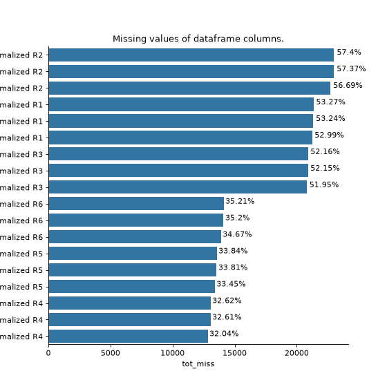
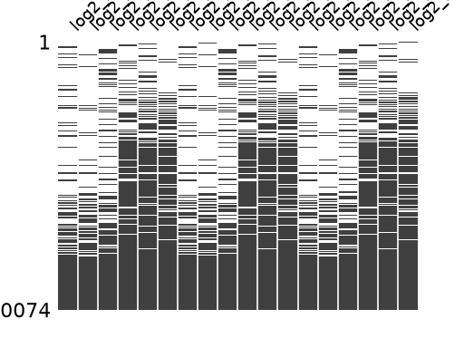

Quality Control#
Autoprot Analysis Functions.
@author: Wignand, Julian, Johannes
@documentation: Julian
- autoprot.analysis.qc.SILAC_labeling_efficiency(df_evidence: DataFrame, label: Literal['L', 'M', 'H'] = None, lys_ax: Axes = None, arg_ax: Axes = None, r_to_p_conversion: Literal['Pro5', 'Pro6'] = None, r_to_p_return: bool = True, r_to_p_ax: Axes = None) DataFrame | tuple[DataFrame, DataFrame][source]#
- Parameters:
df_evidence (MaxQuant evidence table) – clean reverse and contaminant first autoprot.preprocessing.cleaning()
label (str, optional) – The label type used in the experiment (‘L’, ‘M’, ‘H’). The default is None (will analyze ‘H’).
lys_ax (matplotlib axis, optional) – If provided, the Lys labeling plot will be drawn on the given axis.
arg_ax (matplotlib axis, optional) – If provided, the Arg labeling plot will be drawn on the given axis.
r_to_p_conversion (str, optional) – variable modifications e.g. [“Pro5”, “Pro6”] set in MaxQuant. If provided, Arg to Pro conversion will be calculated. The default is None.
r_to_p_return (bool, optional) – If True, the Arg to Pro conversion table will be returned. The default is True.
r_to_p_ax (matplotlib axis, optional) – If provided, the Arg to Pro conversion plot will be drawn on the given axis.
Notes
To generate the evidence table, search the files in MaxQuant specifying the labels as labels (i.e. multiplicity > 1) and the Arg to Pro conversion as variable modification. There is no need to separate into different analysis groups for this analysis.
- Return type:
Fig, table for SILAC label incorporation
- autoprot.analysis.qc.dimethyl_labeling_efficiency(df_evidence, label, save=True) DataFrame[source]#
This function calculates the labelling efficiency of dimethyl labelled samples using a MaxQuant evidence table.
- Parameters:
df_evidence (pd.DataFrame) – MaxQuant evidence table as pandas.Dataframe
label (str) – The label type used in the experiment (‘L’, ‘M’, ‘H’)
save (bool) – If True table and fig will be saved in active filepath.
- Returns:
Results from the analysis
- Return type:
pd.DataFrame
- autoprot.analysis.qc.enrichment_specificity(df_evidence, mod_col='Phospho (STY)', groupby='Experiment', mode: count = 'count', intensity_colname='Intensity', save=True, ax=None, title=None)[source]#
- Parameters:
df_evidence (cleaned pandas DataFrame from Maxquant analysis)
mod_col (str,) – Give type of enrichment for analysis. The default is ‘Phospho (STY)’. (‘Met–> Phosphonate’, ‘Cys–> Phosphonate’, ‘Met –> Biotin’)
groupby (str,) – Column name to group the data by. The default is ‘Experiment’.
mode (str,) – How to calculate the enrichment specificity. Possible values are ‘count’ and ‘intensity’.
intensity_colname (str,) – Column name for the intensity values. The default is ‘Intensity’.
save (bool,) – While True table and fig will be saved in the active filepath.
ax (matplotlib axis, optional) – If provided, the plot will be drawn on the given axis.
title (str, optional) – Title for the plot. If None, a default title will be used.
- Returns:
Fig and table for enrichment specificity analysis
- Return type:
plt.Figure, pd.DataFrame
- autoprot.analysis.qc.miss_analysis(df, cols, n=None, sort='ascending', text=True, vis=True, extra_vis=False, save_dir=None)[source]#
Print missing statistics for a dataframe.
- Parameters:
df (pd.Dataframe) – Input dataframe with missing values.
cols (list of str) – Columns to perform missing values analysis on.
n (int, optional) – How many rows of the dataframe to displayed. The default is None (uses all rows).
sort (str, optional) – “ascending” or “descending”. The default is ‘ascending’.
text (bool, optional) – Whether to output text summaryMap. The default is True.
vis (bool, optional) – whether to return barplot showing missingness. The default is True.
extra_vis (bool, optional) – Whether to return matrix plot showing missingness. The default is False.
save_dir (str, optional) – Path to folder where the results should be saved. The default is None.
- Raises:
ValueError – If n_entries is incorrectly specified.
- Return type:
None.
Examples
miss_analysis gives a quick overview of the missingness of the provided dataframe. You can provide the complete or prefiltered dataframe as input. Providing n_entries allows you to specify how many of the entries of the dataframe (sorted by missingness) are displayed (i.e. only display the n_entries columns with most (or least) missing values) With the sort argument you can define whether the dataframe is sorted by least to most missing values or vice versa (using “descending” and “ascending”, respectively). The vis and extra_vis arguments can be used to toggle the graphical output. In case of large data (a lot of columns) those might be better turned off.
phos = pd.read_csv("../data/Phospho (STY)Sites_minimal.zip", sep="\t", low_memory=False) phos = pp.cleaning(phos, file = "Phospho (STY)") phosRatio = phos.filter(regex="^Ratio .\/.( | normalized )R.___").columns phos = pp.log(phos, phosRatio, base=2) phos = pp.filter_loc_prob(phos, thresh=.75) phosRatio = phos.filter(regex="log2_Ratio .\/.( | normalized )R.___").columns phos = pp.remove_non_quant(phos, phosRatio) phosRatio = phos.filter(regex="log2_Ratio .\/. normalized R.___").columns phos_expanded = pp.expand_site_table(phos, phosRatio) twitchVsmild = ['log2_Ratio H/M normalized R1','log2_Ratio M/L normalized R2','log2_Ratio H/M normalized R3', 'log2_Ratio H/L normalized R4','log2_Ratio H/M normalized R5','log2_Ratio M/L normalized R6'] twitchVsctrl = ["log2_Ratio H/L normalized R1","log2_Ratio H/M normalized R2","log2_Ratio H/L normalized R3", "log2_Ratio M/L normalized R4", "log2_Ratio H/L normalized R5","log2_Ratio H/M normalized R6"] mildVsctrl = ["log2_Ratio M/L normalized R1","log2_Ratio H/L normalized R2","log2_Ratio M/L normalized R3", "log2_Ratio H/M normalized R4","log2_Ratio M/L normalized R5","log2_Ratio H/L normalized R6"] phos = ana.ttest(df=phos_expanded, reps=twitchVsmild, cond="TvM") phos = ana.ttest(df=phos_expanded, reps=twitchVsctrl, cond="TvC") ana.miss_analysis(phos_expanded, twitchVsctrl+twitchVsmild+mildVsctrl, text=False, sort="descending", extra_vis = True)


{kind=link}
{kind=link}
{kind=link}
{kind=link}
- autoprot.analysis.qc.missed_cleavages(df_evidence, enzyme='Trypsin/P', save=True, ax=None, title=None)[source]#
- Parameters:
df_evidence (cleaned pandas DataFrame from Maxquant analysis)
enzyme (str,) – Give any chosen Protease from MQ. The default is “Trypsin/P”.
save (bool,) – While True table and fig will be saved in active filepath.
ax (matplotlib axis, optional) – If provided, the plot will be drawn on the given axis.
title (str, optional) – Title for the plot. If None, a default title will be used.
- Returns:
Fig and table for missed cleavage analysis
- Return type:
plt.Figure, pd.DataFrame
- autoprot.analysis.qc.tmt6plex_labeling_efficiency(evidence_under, evidence_sty_over=None, evidence_h_over=None, ax_peps_all=None, ax_peps_not=None, ax_over=None)[source]#
Calculate TMT6plex labeling efficiency from 3 dedicated MaxQuant searches as described in Zecha et al. 2019. TMT6plex channels should be named in MQ experiments.
- Parameters:
evidence_under (pd.DataFrame) – evidence.txt as pd.DataFrame from under-labeling search, label-free search with TMT as variable modification on peptide n-term and lysine
evidence_sty_over (pd.DataFrame (optional)) – evidence.txt as pd.DataFrame from over-labeling search, MS2-TMT experiment with TMT as variable modification on serine, threonine, tyrosine
evidence_h_over (pd.Dataframe (optional)) – evidence.txt as pd.DataFrame from over-labeling search, MS2-TMT experiment with TMT as variable modification on histidine
ax_peps_all (matplotlib axis) – If provided, the Peptide labeling plot (all) will be drawn on the given axis
ax_peps_not (matplotlib axis) – If provided, the Peptide labeling plot (not labeled) will be drawn on the given axis
ax_over (matplotlib axis) – If provided, the Over-labeling plot will be drawn on the given axis
Notes
Each of the three searches has to be performed with experiment names containing the TMT6plex channel number (126-131), e.g. a search for three samples labeled with TMT6plex channels 126, 127, 128 could have the experiment names “Sample1_126”, “Sample2_127”, “Sample3_128” in MaxQuant.
- Returns:
df (pd.DataFrame) – Results from labeling efficiency calculations as absolute and relative numbers.
fig (Figure of labeling efficiency as stacked bars. Under/Over-labeling as separated axis.)